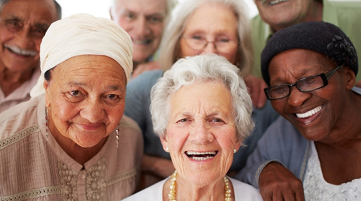
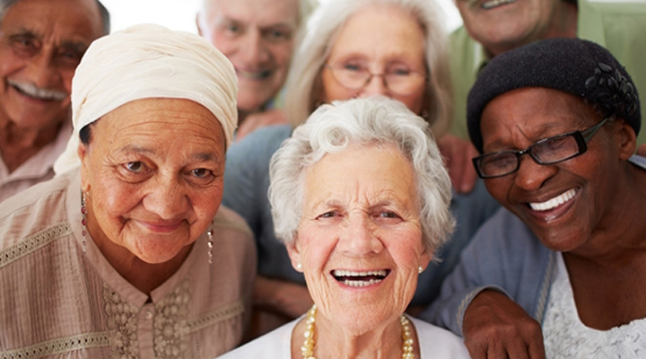
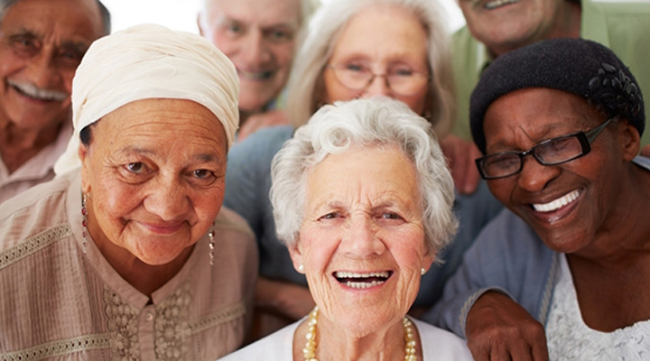

.jpg) 

.jpg)
A saúde social está ligada à manutenção de uma relação saudável nos relacionamentos com a família, amigos, colegas,
ambiente de trabalho e a comunidade de convívio em geral. É a capacidade de interagir com a sociedade. Além do comportamento de cada indivíduo, depende da cultura e do coletivo.
Em 2020, o Instituto Brasileiro de Geografia e Estatística (IBGE) mostrou que existiam mais de 5 milhões de residências em condições precárias, que são caracterizadas pela irregularidade no padrão urbanístico e a
falta de abastecimento de água, coleta de lixo, destinação de esgoto ou fornecimento de energia.
O desemprego no Brasil gera aumento da pobreza e desigualdade, precarização das relações de trabalho, evasão escolar, problemas de saúde mental e aumento da criminalidade, afetando a economia e o bem-estar social,
especialmente em grupos vulneráveis que enfrentam dificuldades na reinserção no mercado de trabalho.
Afetada por problemas do SUS, a qualidade da saúde pública no Brasil deixa a desejar. Para se ter uma ideia, em 2021, a nação investiu apenas 10,5% do Produto Interno Bruto (PIB) em saúde – valor bem menor que a
média mundial de 15,3%, considerando países membros da OCDE.
É importante implementar políticas e programas que promovam a inclusão, a igualdade de oportunidades e o apoio social, além de abordar questões.
Exemplo: Pobreza;
Discriminação;
Violência;
Exclusão social.
Fortalecer as redes de apoio social, melhorar as condições de vida, promover a saúde mental e o bem-estar, criar comunidades seguras e coesas, e fomentar o engajamento cívico são algumas das estratégias essenciais para melhorar a saúde social.
Ao adotar uma abordagem holística e colaborativa, podemos criar ambientes que promovam a saúde e o bem-estar de todos os membros da sociedade. Ou seja, ao priorizar a saúde social, podemos construir sociedades mais saudáveis,
justas e resilientes, onde todos tenham a oportunidade de alcançar seu pleno potencial.
Em conclusão, a saúde social é um componente essencial do bem-estar humano, refletindo as condições sociais, econômicas e ambientais em que as pessoas vivem e interagem. Ela vai além da saúde física e mental, englobando fatores como relações interpessoais, coesão comunitária e o acesso a recursos que garantem uma vida digna e saudável. Os determinantes sociais da saúde, como a educação, a renda, o ambiente de trabalho, a moradia e a rede de apoio social, têm um impacto direto na qualidade de vida das pessoas e nas desigualdades em si promover. Por fim, a saúde social é fundamental não apenas para o bem-estar individual, mas também para a construção de uma sociedade mais justa, inclusiva e coesa, onde todos possam prosperar. Ao abordar a forma integrada dos fatores sociais, econômicos e culturais que influenciam a saúde, podemos criar um ambiente mais equilibrado e saudável.
